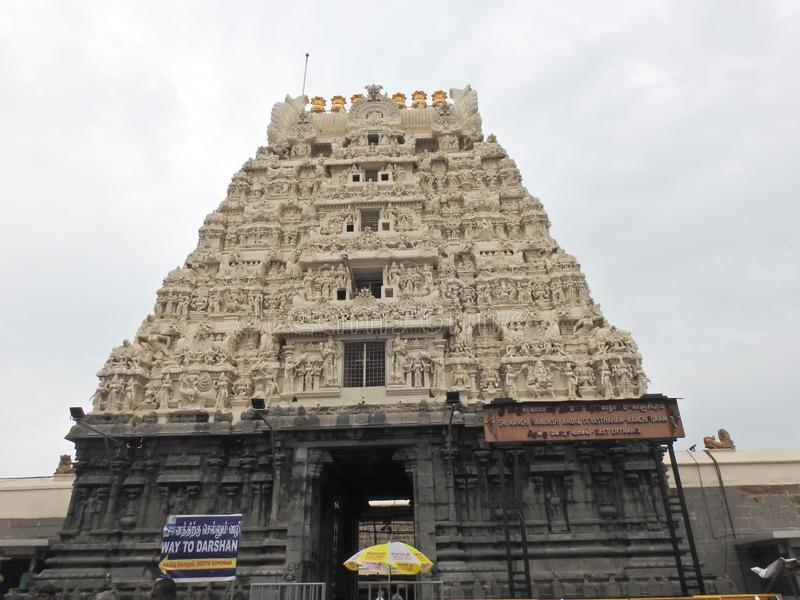

Uttarakhand, also known as Devbhoomi or the Land of Gods, is home to numerous temples and welcomes devotees all year round. Among the countless religious sites and circuits that devotees visit in Uttarakhand, one of the most prominent is the Char Dham Yatra. This Yatra or pilgrimage is a tour of four holy sites - Yamunotri, Gangotri, Kedarnath and Badrinath – nestled high up in the Himalayas. In Hindi, 'char' means four and 'dham' refers to religious destinations.
The high-altitude shrines remain shut for around six months every year, opening in summers (April or May) and closing with the onset of winter (October or November). It is believed that one should complete the Char Dham Yatra in a clockwise direction. Hence, the pilgrimage starts from Yamunotri, proceeds towards Gangotri, onto Kedarnath, and finally ends at Badrinath. The journey can be completed by road or by air (helicopter services are available). Some devotees even do a Do Dham Yatra or a pilgrimage to two shrines - Kedarnath and Badrinath.
The Yamunotri temple, lodged in a narrow gorge close to the source of River Yamuna (the second-most sacred Indian river after River Ganga) in Uttarkashi district, is dedicated to Goddess Yamuna. The district of Uttarkashi is also home to Gangotri dedicated to Goddess Ganga, the most sacred of all Indian rivers. Located in the Rudraprayag district lies Kedarnath, dedicated to Lord Shiva. Badrinath, home to the sacred Badrinarayan Temple, is dedicated to Lord Vishnu. The Char Dham Yatra is as divine as it is arduous but fulfills the soul!
Yomuntori Dham
angotriDham
Kedarnath Dham
Badrinath Dham
Sun Temple, Odisha
Sun Temple, Odisha
The Sun temple is situated in the small town of Konark situated in the Puri district of Odisha. This marvel of architecture is dedicated to Indian God of Sun, Surya. The temple has been built in the shape of his chariot which is drawn by seven horses.
The temple was built in the 13th century by a king called Narasimhadeva. There is an ancient legend attached to this temple, once Lord Krishna cursed one of his own sons with leprosy. To seek penance, his son, Samba worshiped Surya for twelve years.
Pleased with his devotion, Surya healed him. Samba made the Sun temple in return to express his gratitude. The mesmerizing beauty of the place was best summed up by Rabindranath Tagore: ‘Here the language of stone surpasses the language of man.’
Brihadeeswara Temple, Tamil Nadu
Brihadeeswara Temple, Tamil Nadu
Brihadeeswara Temple is one of the largest South-Indian temples situated in Thanjavur, Tamil Nadu. Also known as Peruvudaiyar Kovil and RajaRajeswaram, this 11th century temple was built by the Chola emperor Raja Raja Chola I. Cholas are known for their admiration for art.
The opulence and artistic proficiency of Cholas is well reflected in the grand and magnificent architecture of the temple. Made entirely of granite stone, it was built as per the principles of Vaastu Shastra.
The most remarkable thing about this UNESCO World Heritage Site is that it doesn’t leave any shadow on the ground at noon. Dedicated to Lord Shiva, the temple speaks of the importance of religious beliefs in Hinduism.
Somnath Temple Gujarat
Somnath Temple Gujarat
Somnath Temple is one of the oldest pilgrimage centres in India and finds mention in the ancient books of Shiv Puran, Skanda Purana and Shreemad Bhagvat Gita. Soma refers to ‘Moon God’, thus Somnath means ‘Protector of the Moon God’.
According to a legend, the Indian God of Moon, Soma was cursed by his father-in-law to lose his lustre. It was Lord Shiva who cured his illness and later Soma built this temple in his honour. It is one of the most revered ‘jyotirlinga’ among the 12 jyotirlingas of India.
The temple is located in Prabhas Kshetra in Saurashtra (Gujarat). Prabhas Kshetra is where Lord Krishna is believed to have left his mortal body. The place also has a Somnath museum, Junagadh gate, beach and a sound and light show to amuse the pilgrims.
Sanchi Stupa, Madhya Pradesh
Sanchi Stupa, Madhya Pradesh
Surrounded by the ruins of smaller stupas and monasteries, Sanchi Stupa is an architectural marvel in Sanchi, believed to house the relics of Lord Buddha. Also known as the Great Stupa, this famous pilgrimage site in India was built by the Indian Emperor Ashoka, the Great in the 3rd century BC.
As the oldest stone sculpture of the country, this UNESCO World Heritage Site takes you back in the days of the prosperous Mauryan Era. There are four intricately designed gateways surrounding the Stupa known as toranas, each individually symbolizing the four emotions of love, peace, courage and trust.
Vaishno Devi Temple, Jammu and Kahsmir
Vaishno Devi Temple, Jammu and Kahsmir
One of the most holy sites for Hindu pilgrims, Vaishno Devi Temple is nestled on the Trikuta mountain in Jammu & Kashmir. As per the legend, Vaishno Devi under the disguise of a young girl, Vaishnavi was being chased by a black magician, Bhairo Nath.
He was pestering her to marry him. In order to escape him, she fled to the mountains but he followed her there too. After stopping at present day Banganga, Charan Paduka and Adkwari, the Goddess finally reached the holy shrine. When Bhairo Nath showed no sign of backing down, Vaishnavi was compelled to kill him.
She beheaded him at the mouth of the cave and his head fell at a distant hill top. After realizing his mistake, Bhairo Nath begged for her forgiveness. Taking pity on him, the Goddess blessed him with a boon that anyone who takes up the pilgrimage to the shrine will also have to visit Bhairo Nath Temple, only then will the journey be completed.
Thousands of devotees every year visit the shrine in order to seek blessings from the Great Goddess of power, humility and grace.
Siddhivinayak Temple, Maharashtra
Siddhivinayak Temple, Maharashtra
Located in Prabhadevi, Mumbai, Siddhivinayak Temple is one of the eight Ganesha Temples in Maharashtra. It is also one of the richest temples in India. Lord Ganesha is the supreme deity of the temple who is always the first one to be worshipped before commencing something new in life.
This is the reason why he is also known as Vighnaharta (the terminator of impediments). On the wooden doors of the shrine, eight impressions of Lord Ganapati (Ashtavinayak) are carved. Siddhivinayak temple consists of one of the eight images of Lord Ganesha.
Other distinct images are spread over seven temples situated in Maharashtra. The temple is visited by the devotees all days of the year but Tuesday is the day when maximum numbers of people come to pray to the Lord for good luck.
Kashi Vishwanath Temple, Uttar Pradesh
Kashi Vishwanath Temple, Uttar Pradesh
Located in the oldest surviving city of the world- Varanasi, Kashi Vishwanath Temple is one of the most visited temples in India. It is the most revered of the twelve jyotirlingas located in India.
The temple stands in all-might at the western bank of River Ganges and teaches mankind the true meaning of life and death. A one-time visit to the Kashi Vishwanath Temple is equivalent to the visit to other eleven jyotirlingas of Lord Shiva.
This heavenly abode is visited by many distinguished personalities such as Adi Shankaracharya, Swami Vivekananda, Goswami Tulsidas, Gurunanak among others.
A visit to this sacred temple is believed to be one of the ways to attain ‘moksha’ (ultimate liberation of the soul).
Shri Jagannath Temple, Odisha
Shri Jagannath Temple, Odisha
Built in the 12th century, Jagannath temple is situated in Puri, Orissa and is popularly called Jagannath Puri. Dedicated to Lord Krishna, the temple is one of the Char Dhams of India.
Inside the main temple, with the idol of Lord Krishna (Jagannath) in between, the idols of Lord Balabhadra and Goddess Subhadra are placed. Non-Hindus cannot enter the premises of the temple.
They can get a good view of this magnificent temple from the roof-top of the Raghunandan Library located just opposite to the temple. The annual and world famous Rath Yatra conducted at Puri gives a chance to get a good glimpse of the Lord Jagannath along with Balabhadra and Subhadra riding on the chariots.
Thousands of people pulling the sacred chariot makes the yatra a worthy spectacle.
Meenakshi Temple, Tamil Nadu
Meenakshi Temple, Tamil Nadu
This architectural wonder is situated in Madurai, Tamil Nadu and is dedicated to Goddess Parvati (also known as Meenakshi) and her husband Lord Shiva. Madurai is the second biggest city of India and is also one of the oldest cities of the world.
A dip in the Golden Lotus tank, situated in the temple, is considered auspicious and is usually taken before visiting the main shrine of the God and Goddess. As per a legend, the pond was created by Lord Shiva and is even older than the temple.
The temple has a hall, which consists of 985 pillars; each pillar is intricately carved with distinct figurines. The 12th century colorful temple was among the thirty nominees of the ‘New Seven Wonders of the World’.
Amarnath Cave Temple, Jammu and Kashmir
Amarnath Cave Temple, Jammu and Kashmir
The holy cave of Amarnath is located at an altitude of 3,888 meters in the Union Territory of Jammu and Kashmir. Engulfed with snow-clad mountains, the cave mostly remains covered with snow during the year.
In the summer season, between the months of June and August, it becomes accessible and hence opens up for the pilgrims. The cave is believed to be 5000 years old. As per a popular legend, Buta Malik, a Muslim shepherd, met a holy man who handed him a bag of coal.
On reaching home, he found that the coal got converted into gold. Moved by the miracle the shepherd went in search of the saint and instead found the sacred abode of Lord Shiva.
The pilgrimage to Amarnath consists of a 5-day trek during which the devotees brave tough and uncertain climatic conditions and walk for forty miles.
Lingaraja Temple, Odisha
Lingaraja Temple, Odisha
Lingaraja Temple is one of the oldest and largest temples of the ‘Temple City of India’ – Odisha. Built in the typical architectural style of Kalinga, the temple doesn’t only attract religious devotees but also history enthusiasts.
The idol of Lingaraj usually represents Lord Shiva, but in this temple, it symbolizes Lord Shiva and Lord Vishnu. The combined form of both the Gods is referred to as ‘Harihara’.
A lake called Bindu Sagar touches the temple on one side and is said to have healing powers. Non-Hindus are not allowed to enter the premises; thus, they can see the magnificent structure from a platform outside the temple.
Kanchipuram Temples, Tamil Nadu

Kanchipuram Temples, Tamil Nadu
The City of Thousand Temples – Kanchipuram, Tamil Nadu is one of the seven sacred places in India wherein the people can attain moksha, as per the Hindu religion. Every temple in Kanchipuram is a fascinating element of architecture. Among the most revered temples of Kanchi three major ones are mentioned below:
<>Kamaksstronghi Amman Temple: Goddess Kamakshi is one of the manifestations of Goddess Parvati. Unlike her other idols which are in standing position, the enchanting idol at Kamakshi temple is sitting in Padmasana- a yogic sitting posture.Ekambareswarar Temple: This shrine of Lord Shiva is also the largest among all the temples in Kanchipuram. The main lingam of the Ekambareswarar temple is made of sand and is believed to be built by the Goddess Parvati herself.Varadaraja Perumal Temple: It is one of the 108 temples of Vishnu (Divya Desams). This temple along with the temples of Kamakshi and Ekambareswarar are collectively called Mumurtivasam meaning home of the trio.
Akshardham Temple, Delhi
Akshardham Temple, Delhi
Constructed on the principles of Vastu Shastra and Pancharatra Shastra, this temple is situated near the banks of River Yamuna in Delhi. The authenticity of the temple is reflected in its resemblance with ancient Indian architecture and the spirituality the place exudes.
The principal deity of the temple is Lord Swaminarayan, an incarnation of Lord Vishnu. The 11-feet idol lies below the central dome of the temple. The structure has been built of Rajasthani pink stone and Italian Carrara marble.
The magnificent temple of Akshardham looks more stunning during the night with the beautifully installed lighting arrangements. There are many activities and events like exhibitions, movies, statues and boat rides through which information about the history and philosophy of the Swaminarayan sect and its founder is given to the visitors.
Light and music show, which takes place in the evening, is the most fascinating element of the temple.
Shri Digambar Jain Lal Mandir, Delhi
Shri Digambar Jain Lal Mandir, Delhi
Built during the reign of Mughal emperor Shah Jahan in 1656, Shri Digambar Jain Lal Mandir is the oldest Jain temple in Delhi. Made in the honor of the 23rd Tirthankara, Parashvanath, the temple is made of red sandstone.
Standing right across the Red Fort, the temple consists of a charitable bird hospital, which have different wards for different species, a research laboratory and an intensive care unit.
The hospital came in to being in 1956 and exemplifies one of the basic principles of Jainism, which states that all living beings, no matter how small or insignificant have a right to freedom.
Shirdi Sai Baba Temple, Maharashtra
Shirdi Sai Baba Temple, Maharashtra
The holy temple of Sai baba was built in 1922 in Shirdi, Maharashtra. Located about 296 kms from Mumbai, the small town of Shirdi has attained fame due to its association with Shri Sai Baba.
Spread over an area of 200 sq. Km, the shrine was made over the Samadhi of Sai Baba. Each day around 25,000 devotees come to offer prayers to Sai Baba.
Ramnavmi, Guru Purnima and Vijayadashami are the major festivals that are celebrated with great enthusiasm and passion.
Dwarkadhish Temple, Gujarat
Dwarkadhish Temple, Gujarat
The holy abode of Lord Krishna, Dwarkadhish temple is situated in the Dwarka city of Gujarat. Also known as Jagat Mandir, the temple has two doors for entry and exit of the pilgrims. The entry door is called the Swarg Dwar (doorway to heaven) and the exit door is called Moksha Dwar (the doorway to liberation).
A part of the pious Char Dham Yatra, the 5-storied temple is supported by 72 pillars. Situated on the banks of River Gomti the temple reaches the height of 51.8 meters and a flight of 56 steps need to be taken to reach the Swarg Dwar. Inside the shrine, Lord Krishna dazzles his devotees through his idol built in black stone.
Laxminarayan Temple, Delhi
Laxminarayan Temple, Delhi
Inaugurated by Mahatma Gandhi in 1939, the temple was built by the industrialist Baldeo Das Birla in Delhi and can be visited by people of all caste and creed. Laxminarayan is an incarnation of Lord Vishnu when he is with his consort, Goddess Lakshmi.
The primary shrine is devoted to Laxminarayan and the other smaller shrines are dedicated to other Indian Gods like Lord Shiva, Lord Hanuman, Lord Krishna, Lord Ganesh and Lord Buddha.
Spread over an area of 7.5 acres the temple is one of the top tourist attractions in Delhi and has a huge garden, fountains and a large hall called Geeta Bhawan.
Mahabodhi Temple, Bihar
Mahabodhi Temple, Bihar
Located in the ancient city of Bodh Gaya in Bihar, Mahabodhi Temple literally means the ‘Great Awakening Temple’. It is the sole-surviving shrine out of the 84,000 shrines erected by King Ashoka The Great.
This auspicious abode of peace is where Prince Siddhartha attained nirvana and became Lord Buddha at the age of 35 years. The Great Stupa finds its reference in the travelogue of the well-known Chinese explorer, Huen Tseng.
The temple’s unique and authentic architectural style has earned a place in the UNESCO World Heritage Sites. Mahabodhi Mahavira as it is popularly called is one of the greatest pilgrimage sites for people who follow Buddhism.
Kamakhya Temple, Assam
Kamakhya Temple, Assam
Nestled in the Nilachal Hill in the western part of Guwahati, Assam, is the Kamakhya Temple. According to Kalika Purana, Kamakhya Temple is one of the four primary shakti-peethas of Goddess Sati. It is also a centre for Tantra worship.
It is believed that the ‘garbhagriha’ of the temple houses the mythical womb of the Goddess. Known across the nation as the unique temple that celebrates womanhood, the Brahmaputra river near the temple turns red every year during the month of June. It is believed that the Goddess menstruates during this period which is celebrated as the power of woman to give birth.
Neelkanth Mahadev Temple, Uttarakhand
Neelkanth Mahadev Temple, Uttarakhand
Built in the valleys of the hill town of Rishikesh, Neelkanth Mahadev Temple is one of the most prominent Hindu pilgrimage sites dedicated to Nilkanth, an incarnation of Lord Shiva.
According to the legend, the Devas (Gods) and Asuras (Demons) fought over the potion of immortality during Samundra Manthan. Lord Shiva drank the poison that came with it to save the world from apocalypse, thus marking the place which led to the construction of the Neelkanth Mahadev Temple.
Sri Ranganathaswamy Temple, Karnataka
Sri Ranganathaswamy Temple, Karnataka
Located in the city of Srirangam in Karnataka, Sri Ranganathaswamy Temple is the world’s largest functioning temple. It was consecrated in 984 A.D. by a local chief.
The sanctum houses a reclining form of Lord Vishnu known as Raganatha. Lord Vishnu is seen reclining on his snake, Adisesha under a canopy formed by its seven hoods with Goddess Lakshmi at his feet.
The temple is one of the five most sacred sites of worship called Pancharanga Kshetram.
Other Interesting Blogs to Read
 Sun Temple, Odisha
Sun Temple, Odisha